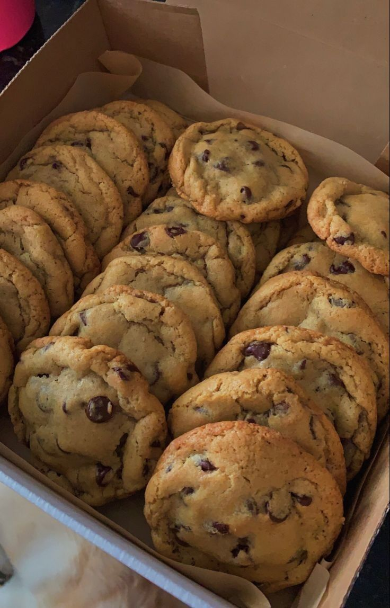
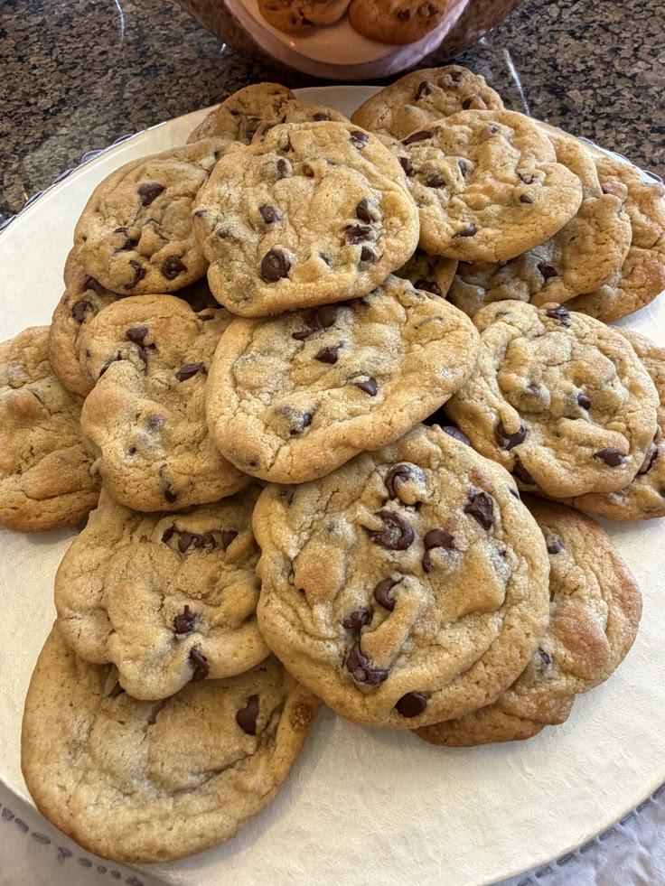
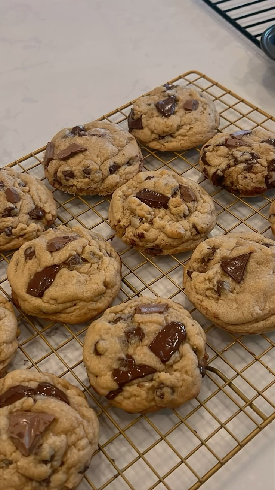
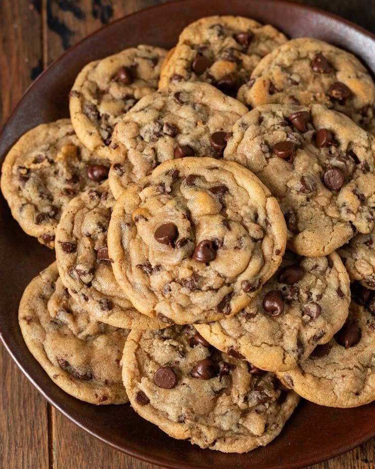

Chocolate Chip Cookie




Recipe
- Start by melting the butter and then letting it cool. Meanwhile, whisk together your dry ingredients—flour, baking soda, and salt—in a medium bowl.
- Pour the cooled melted butter into a large bowl and whisk in the brown sugar and granulated sugar together. Add the eggs and whisk to combine, then whisk in the vanilla.
- Add the dry ingredients to the wet ingredients and mix with a rubber spatula until just halfway mixed in. You should see plenty of dry streaks at this point. Don't worry, we'll get rid of them in a sec, we're just trying to make sure we work the dough as little as possible to minimize gluten development. Add the chocolate and fold the dough with the spatula just until combined and no dry streaks remain. Cover the bowl tightly with plastic wrap and refrigerate for at least 4 hours and, preferably, up to 24 hours—the longer, the better. Why? Well, the extended chilling time allows the flavors to deepen and, just as importantly, it ensures the cookies bake up nice and tall, with soft centers. Trust me, your patience will be rewarded.
- Let's get ready to bake! Remove the cookie dough from the fridge and let it come to room temperature. Meanwhile, preheat your oven to 350° and line two baking sheets with parchment. Using a large cookie scoop (about 3 tablespoons), portion out the dough onto the prepared sheets, spacing 2" to 3" apart; these are large cookies, and we don't want them merging with each other.
- Bake the cookies until the edges are golden brown and just set, and the centers are still a little soft (they should give under gentle pressure), 12 to 14 minutes. The cookies should seem a little underbaked when you pull them from the oven, but not to worry: They'll firm up further as they cool. Transfer to a wire rack and let cool slightly.
RECIPE TIPS
- Use two types of chocolate. For the ultimate chocolaty cookie, go beyond just one kind of chocolate. Besides using chocolate chips for the iconic look, incorporate chocolate wafers or chopped bar chocolate to create layers of chocolate in your cookie. You can also mix up your chocolates! I like darker chocolates, so I use bittersweet and semisweet, but if you don’t like dark, use milk and semisweet together.
- Don’t underestimate the importance of chilling. Trust me, I tried so hard to create a perfect cookie without the chill, but in the end, it's the difference between a great chocolate chip cookie and THE chocolate chip cookie. Chilling the dough not only makes the cookies more flavorful, but also helps them bake more evenly. The chilled dough will hold its shape for longer, giving you a taller cookie with a soft center instead of a mostly flat and crispier cookie.
Make perfectly round cookies. For round, bakery-like cookies, I always use a cookie scoop instead of portioning out the batter with a regular spoon. A cookie scoop makes the round edges for you, and the cookies keep their shape better while baking.
Melted butter is superior. When you incorporate softened butter with the sugar, it adds a lot of air to your dough, creating a cake-like texture in the cookie. While this is great for a classic vanilla cake, it’s not ideal for cookies. Melted butter gives you chewier, fudgier cookies. Plus, it means you can make these cookies with a simple whisk, no electric mixer required!
Back to Home Page!
Visit More Recipes!